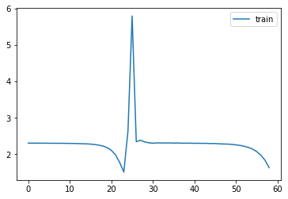
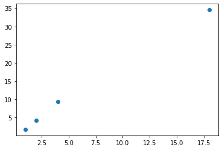
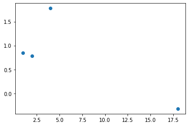

from fastcore.test import test_close
torch.set_printoptions(precision=2, linewidth=140, sci_mode=False)
torch.manual_seed(1)
import logging
logging.disable(logging.WARNING)
set_seed(42)This is not my content it’s a part of Fastai’s From Deep Learning Foundations to Stable Diffusion course. I add some notes for me to understand better thats all. For the source check Fastai course page.
Initialization, Layer normalization, Batch Normalization, cleaning memory
Initialization
::: {.cell 0=‘e’ 1=‘x’ 2=‘p’ 3=‘o’ 4=‘r’ 5=‘t’}
import pickle,gzip,math,os,time,shutil,torch,matplotlib as mpl,numpy as np,matplotlib.pyplot as plt
import sys,gc,traceback
import fastcore.all as fc
from collections.abc import Mapping
from pathlib import Path
from operator import attrgetter,itemgetter
from functools import partial
from copy import copy
from contextlib import contextmanager
import torchvision.transforms.functional as TF,torch.nn.functional as F
from torch import tensor,nn,optim
from torch.utils.data import DataLoader,default_collate
from torch.nn import init
from torcheval.metrics import MulticlassAccuracy
from datasets import load_dataset,load_dataset_builder
from miniai.datasets import *
from miniai.conv import *
from miniai.learner import *
from miniai.activations import *:::
xl,yl = 'image','label'
name = "fashion_mnist"
dsd = load_dataset(name)
@inplace
def transformi(b): b[xl] = [TF.to_tensor(o) for o in b[xl]]
bs = 1024
tds = dsd.with_transform(transformi)
dls = DataLoaders.from_dd(tds, bs, num_workers=4)
dt = dls.train
xb,yb = next(iter(dt))
xb.shape,yb[:10](torch.Size([1024, 1, 28, 28]), tensor([9, 0, 0, 3, 0, 2, 7, 2, 5, 5]))def get_model():
return nn.Sequential(conv(1 ,8), conv(8 ,16), conv(16,32), conv(32,64),
conv(64,10, act=False), nn.Flatten()).to(def_device)MomentumLearner(get_model(), dls, F.cross_entropy, cbs=[DeviceCB()]).lr_find(gamma=1.1, start_lr=1e-2)metrics = MetricsCB(accuracy=MulticlassAccuracy())
astats = ActivationStats(fc.risinstance(nn.ReLU))
cbs = [DeviceCB(), metrics, ProgressCB(plot=True), astats]
learn = MomentumLearner(get_model(), dls, F.cross_entropy, lr=0.2, cbs=cbs)learn.fit(1)| accuracy | loss | epoch | train |
|---|---|---|---|
| 0.169 | 2.298 | 0 | train |
| 0.453 | 1.426 | 0 | eval |

astats.color_dim()astats.plot_stats()1+12_22+24_,__,___,_4(((4, 4), 4, 4), (4, 4), 4, (4, 4))
cleaning memory
keys: gpu memory, kernel clean
::: {.cell 0=‘e’ 1=‘x’ 2=‘p’ 3=‘o’ 4=‘r’ 5=‘t’}
def clean_ipython_hist():
# Code in this function mainly copied from IPython source
if not 'get_ipython' in globals(): return
ip = get_ipython()
user_ns = ip.user_ns
ip.displayhook.flush()
pc = ip.displayhook.prompt_count + 1
for n in range(1, pc): user_ns.pop('_i'+repr(n),None)
user_ns.update(dict(_i='',_ii='',_iii=''))
hm = ip.history_manager
hm.input_hist_parsed[:] = [''] * pc
hm.input_hist_raw[:] = [''] * pc
hm._i = hm._ii = hm._iii = hm._i00 = '':::
::: {.cell 0=‘e’ 1=‘x’ 2=‘p’ 3=‘o’ 4=‘r’ 5=‘t’}
def clean_tb():
# h/t Piotr Czapla
if hasattr(sys, 'last_traceback'):
traceback.clear_frames(sys.last_traceback)
delattr(sys, 'last_traceback')
if hasattr(sys, 'last_type'): delattr(sys, 'last_type')
if hasattr(sys, 'last_value'): delattr(sys, 'last_value'):::
::: {.cell 0=‘e’ 1=‘x’ 2=‘p’ 3=‘o’ 4=‘r’ 5=‘t’}
def clean_mem():
clean_tb()
clean_ipython_hist()
gc.collect()
torch.cuda.empty_cache():::
Glorot/Xavier init
x = torch.randn(200, 100)
for i in range(50): x = x @ torch.randn(100,100)
x[0:5,0:5]tensor([[nan, nan, nan, nan, nan],
[nan, nan, nan, nan, nan],
[nan, nan, nan, nan, nan],
[nan, nan, nan, nan, nan],
[nan, nan, nan, nan, nan]])The result is nans everywhere. So maybe the scale of our matrix was too big, and we need to have smaller weights? But if we use too small weights, we will have the opposite problem—the scale of our activations will go from 1 to 0.1, and after 50 layers we’ll be left with zeros everywhere:
x = torch.randn(200, 100)
for i in range(50): x = x @ (torch.randn(100,100) * 0.01)
x[0:5,0:5]tensor([[0., 0., 0., 0., 0.],
[0., 0., 0., 0., 0.],
[0., 0., 0., 0., 0.],
[0., 0., 0., 0., 0.],
[0., 0., 0., 0., 0.]])So we have to scale our weight matrices exactly right so that the standard deviation of our activations stays at 1. We can compute the exact value to use mathematically, as illustrated by Xavier Glorot and Yoshua Bengio in “Understanding the Difficulty of Training Deep Feedforward Neural Networks”. The right scale for a given layer is \(1/\sqrt{n_{in}}\), where \(n_{in}\) represents the number of inputs.
x = torch.randn(200, 100)
for i in range(50): x = x @ (torch.randn(100,100) * 0.1)
x[0:5,0:5]tensor([[-0.81, -0.20, -0.18, 0.24, -0.47],
[ 0.04, -0.51, 0.52, 0.15, 0.53],
[ 0.10, -0.10, -0.35, -0.23, -0.68],
[ 0.03, 0.11, -1.07, 0.63, 0.05],
[-1.11, -0.25, 0.61, -0.83, -0.14]])Background
Variance and standard deviation
Variance is the average of how far away each data point is from the mean. E.g.:
t = torch.tensor([1.,2.,4.,18])m = t.mean(); mtensor(6.25)(t-m).mean()tensor(0.)Oops. We can’t do that. Because by definition the positives and negatives cancel out. So we can fix that in one of (at least) two ways:
(t-m).pow(2).mean()tensor(47.19)(t-m).abs().mean()tensor(5.88)But the first of these is now a totally different scale, since we squared. So let’s undo that at the end.
(t-m).pow(2).mean().sqrt()tensor(6.87)They’re still different. Why?
Note that we have one outlier (18). In the version where we square everything, it makes that much bigger than everything else.
(t-m).pow(2).mean() is refered to as variance. It’s a measure of how spread out the data is, and is particularly sensitive to outliers.
When we take the sqrt of the variance, we get the standard deviation. Since it’s on the same kind of scale as the original data, it’s generally more interpretable. However, since sqrt(1)==1, it doesn’t much matter which we use when talking about unit variance for initializing neural nets.
The standard deviation represents if the data stays close to the mean or on the contrary gets values that are far away. It’s computed by the following formula:
\[\sigma = \sqrt{\frac{1}{n}\left[(x_{0}-m)^{2} + (x_{1}-m)^{2} + \cdots + (x_{n-1}-m)^{2}\right]}\]
where m is the mean and \(\sigma\) (the greek letter sigma) is the standard deviation. Here we have a mean of 0, so it’s just the square root of the mean of x squared.
(t-m).abs().mean() is referred to as the mean absolute deviation. It isn’t used nearly as much as it deserves to be, because mathematicians don’t like how awkward it is to work with. But that shouldn’t stop us, because we have computers and stuff.
Here’s a useful thing to note about variance:
(t-m).pow(2).mean(), (t*t).mean() - (m*m)(tensor(47.19), tensor(47.19))You can see why these are equal if you want to work thru the algebra. Or not.
But, what’s important here is that the latter is generally much easier to work with. In particular, you only have to track two things: the sum of the data, and the sum of squares of the data. Whereas in the first form you actually have to go thru all the data twice (once to calculate the mean, once to calculate the differences).
Let’s go steal the LaTeX from Wikipedia:
\[\operatorname{E}\left[X^2 \right] - \operatorname{E}[X]^2\]
Covariance
Here’s how Wikipedia defines covariance:
\[\operatorname{cov}(X,Y) = \operatorname{E}{\big[(X - \operatorname{E}[X])(Y - \operatorname{E}[Y])\big]}\]
Let’s see that in code. So now we need two vectors.
ttensor([ 1., 2., 4., 18.])# `u` is twice `t`, plus a bit of randomness
u = t*2
u *= torch.randn_like(t)/10+0.95
plt.scatter(t, u);
prod = (t-t.mean())*(u-u.mean()); prodtensor([ 56.21, 35.17, 7.09, 260.07])prod.mean()tensor(89.64)v = torch.randn_like(t)
plt.scatter(t, v);
((t-t.mean())*(v-v.mean())).mean()tensor(-3.88)It’s generally more conveniently defined like so:
\[\operatorname{E}\left[X Y\right] - \operatorname{E}\left[X\right] \operatorname{E}\left[Y\right]\]
cov = (t*v).mean() - t.mean()*v.mean(); covtensor(-3.88)From now on, you’re not allowed to look at an equation (or especially type it in LaTeX) without also typing it in Python and actually calculating some values. Ideally, you should also plot some values.
Finally, here is the Pearson correlation coefficient:
\[\rho_{X,Y}= \frac{\operatorname{cov}(X,Y)}{\sigma_X \sigma_Y}\]
cov / (t.std() * v.std())tensor(-0.57)It’s just a scaled version of the same thing.
x.std()tensor(0.85)Xavier init derivation
When we do y = a @ x, the coefficients of y are defined by
\[y_{i} = a_{i,0} x_{0} + a_{i,1} x_{1} + \cdots + a_{i,n-1} x_{n-1} = \sum_{k=0}^{n-1} a_{i,k} x_{k}\]
or in pure python code:
y[i] = sum([c*d for c,d in zip(a[i], x)])or in numpy/pytorch code:
y[i] = (a[i]*x).sum()At the very beginning, our x vector has a mean of roughly 0. and a standard deviation of roughly 1. (since we picked it that way).
x = torch.randn(100)
x.mean(), x.std()(tensor(0.04), tensor(0.88))If we go back to y = a @ x and assume that we chose weights for a that also have a mean of 0, we can compute the standard deviation of y quite easily. Since it’s random, and we may fall on bad numbers, we repeat the operation 100 times.
mean,sqr = 0.,0.
for i in range(100):
x = torch.randn(100)
a = torch.randn(512, 100)
y = a @ x
mean += y.mean().item()
sqr += y.pow(2).mean().item()
mean/100,sqr/100(0.09304710745811462, 102.91469841003418)Now that looks very close to the dimension of our matrix 100. And that’s no coincidence! When you compute y, you sum 100 product of one element of a by one element of x. So what’s the mean and the standard deviation of such a product? We can show mathematically that as long as the elements in a and the elements in x are independent, the mean is 0 and the std is 1. This can also be seen experimentally:
mean,sqr = 0.,0.
for i in range(10000):
x = torch.randn(1)
a = torch.randn(1)
y = a*x
mean += y.item()
sqr += y.pow(2).item()
mean/10000,sqr/10000(-0.002986055881790071, 0.9694275963147889)Then we sum 100 of those things that have a mean of zero, and a mean of squares of 1, so we get something that has a mean of 0, and mean of square of 100, hence math.sqrt(100) being our magic number. If we scale the weights of the matrix and divide them by this math.sqrt(100), it will give us a y of scale 1, and repeating the product has many times as we want won’t overflow or vanish.
Kaiming/He init
(“He” is a Chinese surname and is pronouced like “Her”, not like “Hee”.)
Background
x = torch.randn(200, 100)
y = torch.randn(200)from math import sqrtw1 = torch.randn(100,50) / sqrt(100)
b1 = torch.zeros(50)
w2 = torch.randn(50,1) / sqrt(50)
b2 = torch.zeros(1)def lin(x, w, b): return x @ w + bl1 = lin(x, w1, b1)
l1.mean(),l1.std()(tensor(0.02), tensor(0.98))def relu(x): return x.clamp_min(0.)l2 = relu(l1)
l2.mean(),l2.std()(tensor(0.40), tensor(0.58))x = torch.randn(200, 100)
for i in range(50): x = relu(x @ (torch.randn(100,100) * 0.1))
x[0:5,0:5]tensor([[ 0.00, 0.00, 0.00, 0.00, 0.00],
[ 0.00, 0.00, 0.00, 0.00, 0.00],
[ 0.00, 0.00, 0.00, 0.00, 0.00],
[ 0.00, 0.00, 0.00, 0.00, 0.00],
[ 0.00, 0.00, 0.00, 0.00, 0.00]])In “Delving Deep into Rectifiers: Surpassing Human-Level Performance” Kaiming He et al. show that we should use the following scale instead: \(\sqrt{2 / n_{in}}\), where \(n_{in}\) is the number of inputs of our model.
x = torch.randn(200, 100)
for i in range(50): x = relu(x @ (torch.randn(100,100) * sqrt(2/100)))
x[0:5,0:5]tensor([[0.00, 0.00, 0.00, 0.07, 0.00],
[0.00, 0.00, 0.00, 0.01, 0.00],
[0.07, 0.00, 0.00, 0.06, 0.00],
[0.00, 0.00, 0.00, 0.15, 0.00],
[0.02, 0.00, 0.00, 0.00, 0.00]])Applying an init function
model = get_model()
model.apply(lambda m: print(type(m).__name__));Conv2d
ReLU
Sequential
Conv2d
ReLU
Sequential
Conv2d
ReLU
Sequential
Conv2d
ReLU
Sequential
Conv2d
Flatten
Sequentialdef init_weights(m):
if isinstance(m, (nn.Conv1d,nn.Conv2d,nn.Conv3d)): init.kaiming_normal_(m.weight)model.apply(init_weights);MomentumLearner(model, dls, F.cross_entropy, cbs=[DeviceCB()]).lr_find()set_seed(42)
learn = MomentumLearner(get_model().apply(init_weights), dls, F.cross_entropy, lr=0.2, cbs=cbs)learn.fit(3)| accuracy | loss | epoch | train |
|---|---|---|---|
| 0.174 | 2.353 | 0 | train |
| 0.100 | 2.303 | 0 | eval |
| 0.100 | 2.303 | 1 | train |
| 0.100 | 2.303 | 1 | eval |
| 0.100 | 2.303 | 2 | train |
| 0.100 | 2.303 | 2 | eval |
astats.color_dim()astats.plot_stats()Input normalization
xmean,xstd = xb.mean(),xb.std()
xmean,xstd(tensor(0.28), tensor(0.35))::: {.cell 0=‘e’ 1=‘x’ 2=‘p’ 3=‘o’ 4=‘r’ 5=‘t’}
class BatchTransformCB(Callback):
def __init__(self, tfm, on_train=True, on_val=True): fc.store_attr()
def before_batch(self, learn):
if (self.on_train and learn.training) or (self.on_val and not learn.training):
learn.batch = self.tfm(learn.batch):::
def _norm(b): return (b[0]-xmean)/xstd,b[1]
norm = BatchTransformCB(_norm)set_seed(42)
learn = MomentumLearner(get_model().apply(init_weights), dls, F.cross_entropy, lr=0.2, cbs=cbs+[norm])
learn.fit(3)| accuracy | loss | epoch | train |
|---|---|---|---|
| 0.669 | 0.977 | 0 | train |
| 0.812 | 0.509 | 0 | eval |
| 0.842 | 0.425 | 1 | train |
| 0.843 | 0.428 | 1 | eval |
| 0.860 | 0.376 | 2 | train |
| 0.853 | 0.399 | 2 | eval |
astats.color_dim()astats.plot_stats()@inplace
def transformi(b): b[xl] = [(TF.to_tensor(o)-xmean)/xstd for o in b[xl]]
tds = dsd.with_transform(transformi)
dls = DataLoaders.from_dd(tds, bs, num_workers=4)
xb,yb = next(iter(dls.train))xb.mean(),xb.std()(tensor( 0.00), tensor(1.))General ReLU
::: {.cell 0=‘e’ 1=‘x’ 2=‘p’ 3=‘o’ 4=‘r’ 5=‘t’}
class GeneralRelu(nn.Module):
def __init__(self, leak=None, sub=None, maxv=None):
super().__init__()
self.leak,self.sub,self.maxv = leak,sub,maxv
def forward(self, x):
x = F.leaky_relu(x,self.leak) if self.leak is not None else F.relu(x)
if self.sub is not None: x -= self.sub
if self.maxv is not None: x.clamp_max_(self.maxv)
return x:::
::: {.cell 0=‘e’ 1=‘x’ 2=‘p’ 3=‘o’ 4=‘r’ 5=‘t’}
def plot_func(f, start=-5., end=5., steps=100):
x = torch.linspace(start, end, steps)
plt.plot(x, f(x))
plt.grid(True, which='both', ls='--')
plt.axhline(y=0, color='k', linewidth=0.7)
plt.axvline(x=0, color='k', linewidth=0.7):::
plot_func(GeneralRelu(leak=0.1, sub=0.4))def conv(ni, nf, ks=3, stride=2, act=nn.ReLU):
res = nn.Conv2d(ni, nf, stride=stride, kernel_size=ks, padding=ks//2)
if act: res = nn.Sequential(res, act())
return resdef get_model(act=nn.ReLU, nfs=None):
if nfs is None: nfs = [1,8,16,32,64]
layers = [conv(nfs[i], nfs[i+1], act=act) for i in range(len(nfs)-1)]
return nn.Sequential(*layers, conv(nfs[-1],10, act=None), nn.Flatten()).to(def_device)::: {.cell 0=‘e’ 1=‘x’ 2=‘p’ 3=‘o’ 4=‘r’ 5=‘t’}
def init_weights(m, leaky=0.):
if isinstance(m, (nn.Conv1d,nn.Conv2d,nn.Conv3d)): init.kaiming_normal_(m.weight, a=leaky):::
act_gr = partial(GeneralRelu, leak=0.1, sub=0.4)
astats = ActivationStats(fc.risinstance(GeneralRelu))
cbs = [DeviceCB(), metrics, ProgressCB(plot=True), astats]
iw = partial(init_weights, leaky=0.1)model = get_model(act_gr).apply(iw)set_seed(42)
learn = MomentumLearner(model, dls, F.cross_entropy, lr=0.2, cbs=cbs)
learn.fit(3)| accuracy | loss | epoch | train |
|---|---|---|---|
| 0.760 | 0.690 | 0 | train |
| 0.846 | 0.423 | 0 | eval |
| 0.866 | 0.365 | 1 | train |
| 0.860 | 0.373 | 1 | eval |
| 0.883 | 0.319 | 2 | train |
| 0.872 | 0.350 | 2 | eval |
astats.color_dim()astats.plot_stats()astats.dead_chart()LSUV
All You Need is a Good Init introduces Layer-wise Sequential Unit-Variance (LSUV).
::: {.cell 0=‘e’ 1=‘x’ 2=‘p’ 3=‘o’ 4=‘r’ 5=‘t’}
def _lsuv_stats(hook, mod, inp, outp):
acts = to_cpu(outp)
hook.mean = acts.mean()
hook.std = acts.std()
def lsuv_init(model, m, m_in, xb):
h = Hook(m, _lsuv_stats)
with torch.no_grad():
while model(xb) is not None and (abs(h.std-1)>1e-3 or abs(h.mean)>1e-3):
m_in.bias -= h.mean
m_in.weight.data /= h.std
h.remove():::
model = get_model(act_gr)
relus = [o for o in model.modules() if isinstance(o, GeneralRelu)]
convs = [o for o in model.modules() if isinstance(o, nn.Conv2d)]for ms in zip(relus,convs): print(ms)(GeneralRelu(), Conv2d(1, 8, kernel_size=(3, 3), stride=(2, 2), padding=(1, 1)))
(GeneralRelu(), Conv2d(8, 16, kernel_size=(3, 3), stride=(2, 2), padding=(1, 1)))
(GeneralRelu(), Conv2d(16, 32, kernel_size=(3, 3), stride=(2, 2), padding=(1, 1)))
(GeneralRelu(), Conv2d(32, 64, kernel_size=(3, 3), stride=(2, 2), padding=(1, 1)))for ms in zip(relus,convs): lsuv_init(model, *ms, xb.to(def_device))set_seed(42)
learn = MomentumLearner(model, dls, F.cross_entropy, lr=0.2, cbs=cbs)
learn.fit(3)| accuracy | loss | epoch | train |
|---|---|---|---|
| 0.764 | 0.667 | 0 | train |
| 0.845 | 0.439 | 0 | eval |
| 0.863 | 0.375 | 1 | train |
| 0.861 | 0.392 | 1 | eval |
| 0.877 | 0.337 | 2 | train |
| 0.866 | 0.378 | 2 | eval |
astats.plot_stats()Batch Normalization
Sergey Ioffe and Christian Szegedy released “Batch Normalization: Accelerating Deep Network Training by Reducing Internal Covariate Shift” in 2015, saying:
Training Deep Neural Networks is complicated by the fact that the distribution of each layer’s inputs changes during training, as the parameters of the previous layers change. This slows down the training by requiring lower learning rates and careful parameter initialization… We refer to this phenomenon as internal covariate shift, and address the problem by normalizing layer inputs.
Their proposal is:
Making normalization a part of the model architecture and performing the normalization for each training mini-batch. Batch Normalization allows us to use much higher learning rates and be less careful about initialization.
LayerNorm
We’ll start with layer normalization, a simpler technique.
class LayerNorm(nn.Module):
def __init__(self, dummy, eps=1e-5):
super().__init__()
self.eps = eps
self.mult = nn.Parameter(tensor(1.))
self.add = nn.Parameter(tensor(0.))
def forward(self, x):
m = x.mean((1,2,3), keepdim=True)
v = x.var ((1,2,3), keepdim=True)
x = (x-m) / ((v+self.eps).sqrt())
return x*self.mult + self.add::: {.cell 0=‘e’ 1=‘x’ 2=‘p’ 3=‘o’ 4=‘r’ 5=‘t’}
def conv(ni, nf, ks=3, stride=2, act=nn.ReLU, norm=None, bias=None):
if bias is None: bias = not isinstance(norm, (nn.BatchNorm1d,nn.BatchNorm2d,nn.BatchNorm3d))
layers = [nn.Conv2d(ni, nf, stride=stride, kernel_size=ks, padding=ks//2, bias=bias)]
if norm: layers.append(norm(nf))
if act: layers.append(act())
return nn.Sequential(*layers):::
::: {.cell 0=‘e’ 1=‘x’ 2=‘p’ 3=‘o’ 4=‘r’ 5=‘t’}
def get_model(act=nn.ReLU, nfs=None, norm=None):
if nfs is None: nfs = [1,8,16,32,64]
layers = [conv(nfs[i], nfs[i+1], act=act, norm=norm) for i in range(len(nfs)-1)]
return nn.Sequential(*layers, conv(nfs[-1],10, act=None, norm=False, bias=True),
nn.Flatten()).to(def_device):::
set_seed(42)
model = get_model(act_gr, norm=LayerNorm).apply(iw)
learn = MomentumLearner(model, dls, F.cross_entropy, lr=0.2, cbs=cbs)
learn.fit(3)| accuracy | loss | epoch | train |
|---|---|---|---|
| 0.779 | 0.616 | 0 | train |
| 0.844 | 0.422 | 0 | eval |
| 0.866 | 0.369 | 1 | train |
| 0.866 | 0.369 | 1 | eval |
| 0.882 | 0.322 | 2 | train |
| 0.874 | 0.346 | 2 | eval |
BatchNorm
class BatchNorm(nn.Module):
def __init__(self, nf, mom=0.1, eps=1e-5):
super().__init__()
# NB: pytorch bn mom is opposite of what you'd expect
self.mom,self.eps = mom,eps
self.mults = nn.Parameter(torch.ones (nf,1,1))
self.adds = nn.Parameter(torch.zeros(nf,1,1))
self.register_buffer('vars', torch.ones(1,nf,1,1))
self.register_buffer('means', torch.zeros(1,nf,1,1))
def update_stats(self, x):
m = x.mean((0,2,3), keepdim=True)
v = x.var ((0,2,3), keepdim=True)
self.means.lerp_(m, self.mom)
self.vars.lerp_ (v, self.mom)
return m,v
def forward(self, x):
if self.training:
with torch.no_grad(): m,v = self.update_stats(x)
else: m,v = self.means,self.vars
x = (x-m) / (v+self.eps).sqrt()
return x*self.mults + self.addsmodel = get_model(act_gr, norm=BatchNorm).apply(iw)
set_seed(42)
learn = MomentumLearner(model, dls, F.cross_entropy, lr=0.4, cbs=cbs)
learn.fit(3)| accuracy | loss | epoch | train |
|---|---|---|---|
| 0.797 | 0.554 | 0 | train |
| 0.822 | 0.543 | 0 | eval |
| 0.873 | 0.346 | 1 | train |
| 0.855 | 0.400 | 1 | eval |
| 0.887 | 0.307 | 2 | train |
| 0.849 | 0.416 | 2 | eval |

Towards 90%…
dls = DataLoaders.from_dd(tds, 256, num_workers=4)set_seed(42)
model = get_model(act_gr, norm=nn.BatchNorm2d).apply(iw)
learn = MomentumLearner(model, dls, F.cross_entropy, lr=0.2, cbs=cbs)
learn.fit(3)| accuracy | loss | epoch | train |
|---|---|---|---|
| 0.834 | 0.452 | 0 | train |
| 0.848 | 0.417 | 0 | eval |
| 0.882 | 0.318 | 1 | train |
| 0.866 | 0.377 | 1 | eval |
| 0.894 | 0.283 | 2 | train |
| 0.876 | 0.344 | 2 | eval |
learn = MomentumLearner(model, dls, F.cross_entropy, lr=0.05, cbs=cbs)
learn.fit(2)| accuracy | loss | epoch | train |
|---|---|---|---|
| 0.916 | 0.227 | 0 | train |
| 0.897 | 0.284 | 0 | eval |
| 0.922 | 0.213 | 1 | train |
| 0.899 | 0.282 | 1 | eval |
Export -
import nbdev; nbdev.nbdev_export()